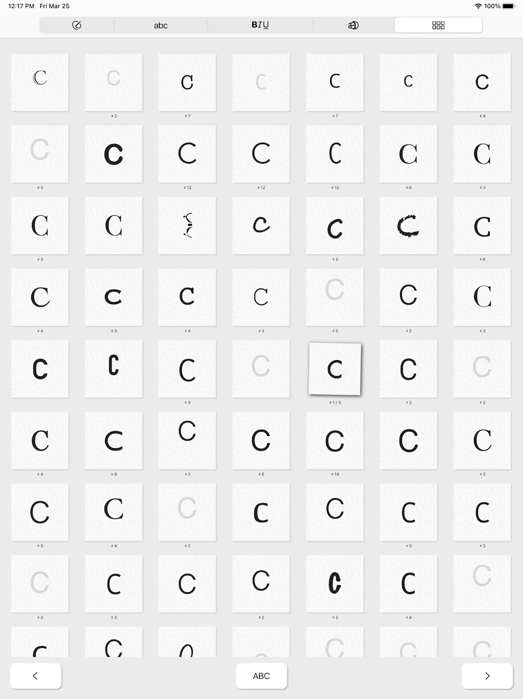
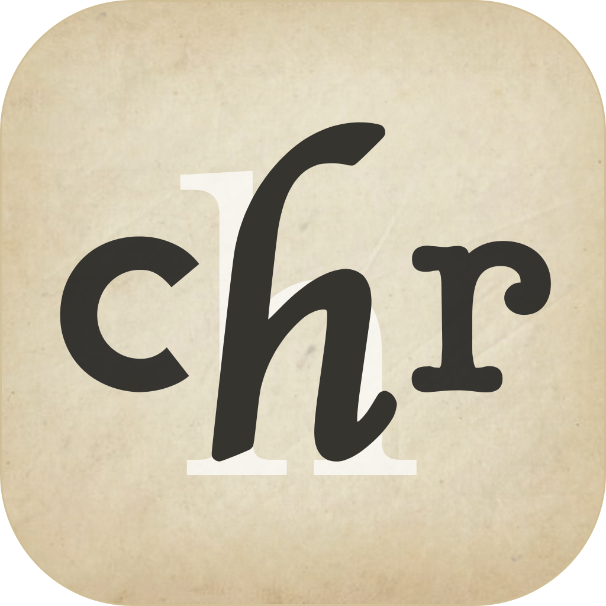
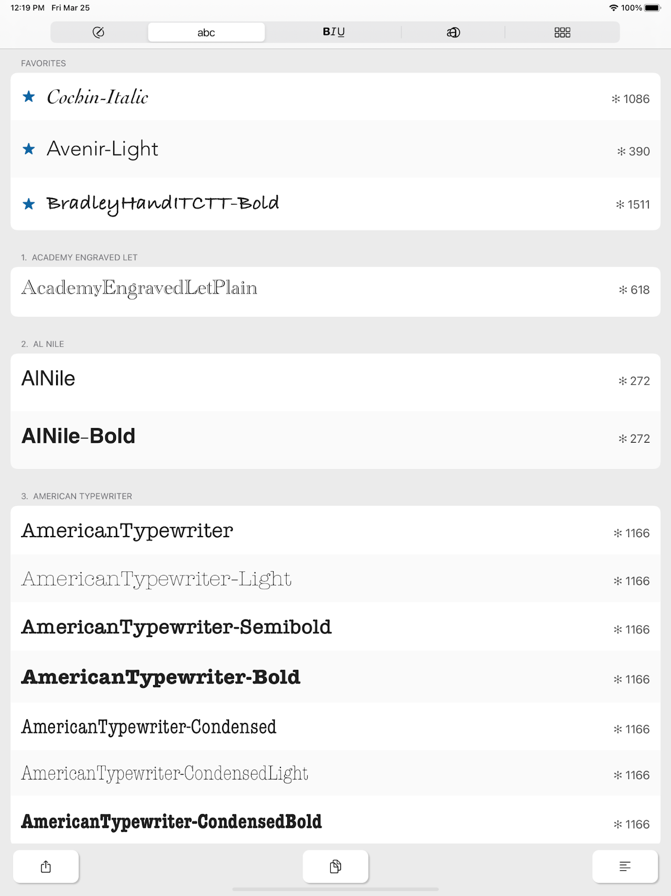
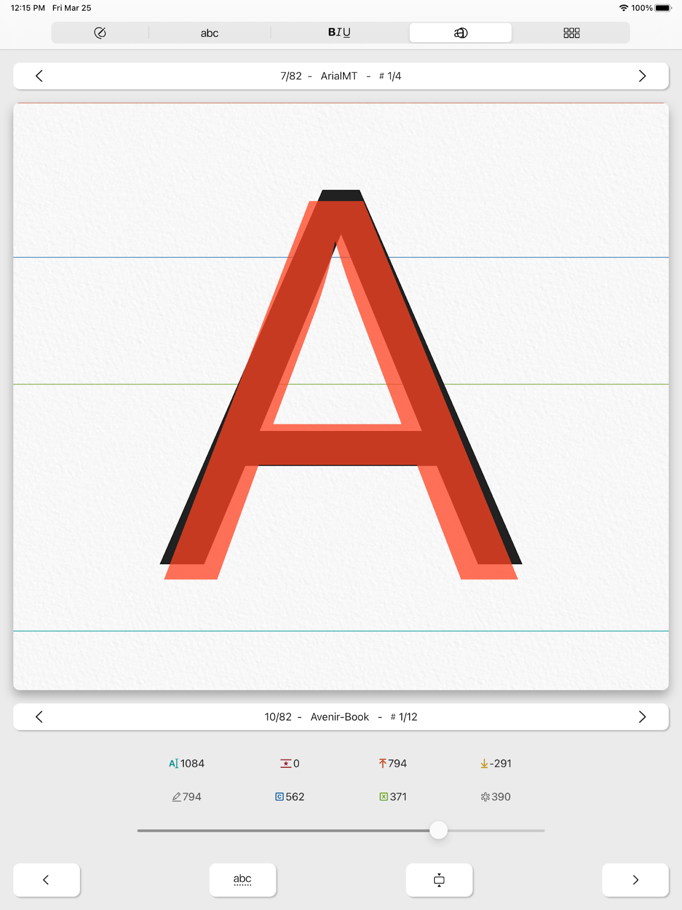
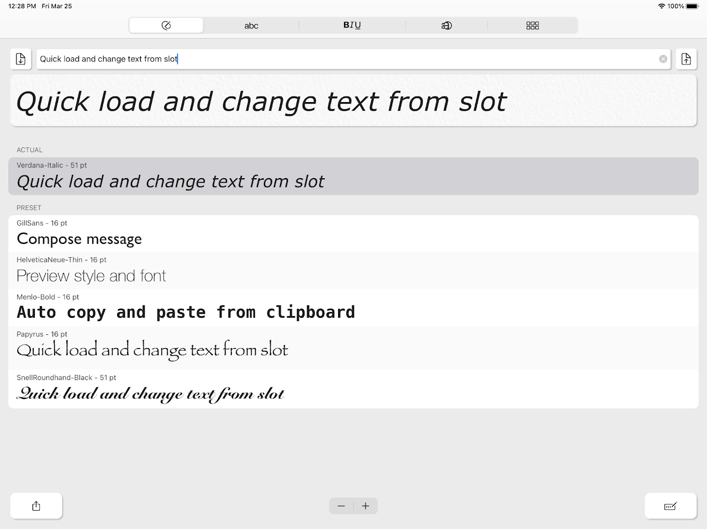
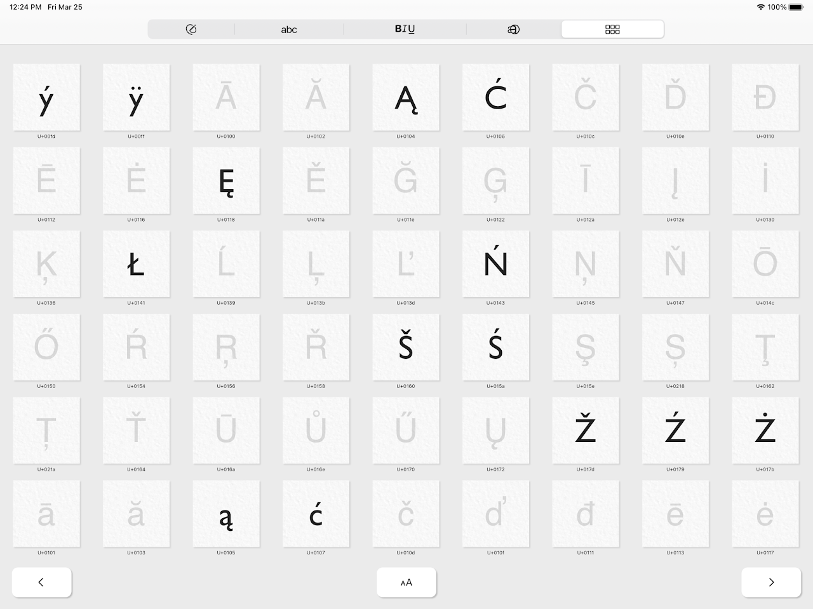
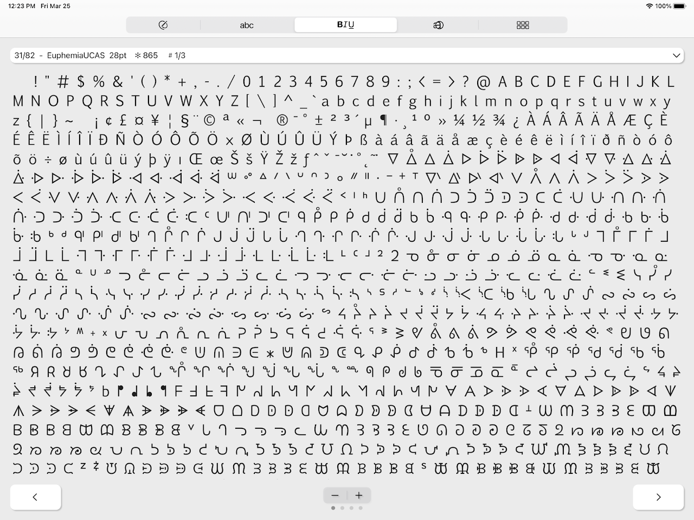

Show
View all characters available in a font and see which ones are replaced.

It's a simple little application that lets you view, test and compare the fonts installed on your system.

View all characters available in a font and see which ones are replaced.

Browse all installed fonts, organize them into categories, and save your favorites.

See even the smallest differences between fonts and measure their baseline offsets.

It converts text to the font of your choice, imports it automatically, and copies it to the clipboard. Save text and styles and switch between them quickly.

View all installed fonts, organize them into groups, mark them, and share them instantly. Explore their variety and beauty, and see which characters each font includes. Easily identify special characters that are displayed using a fallback font.

See all available characters at once, including those you wouldn't normally use when typing. Add signs and symbols to your text or use them to decorate your messages.
The app is free for everyone. We are not responsible for any problems that may arise from its use. If you have any feedback or suggestions for improvements, please send us an email.
The developer does not collect any data from this app. It is made with love and free for everyone. If you enjoy it, please leave a rating on the App Store. I welcome all feedback and comments.